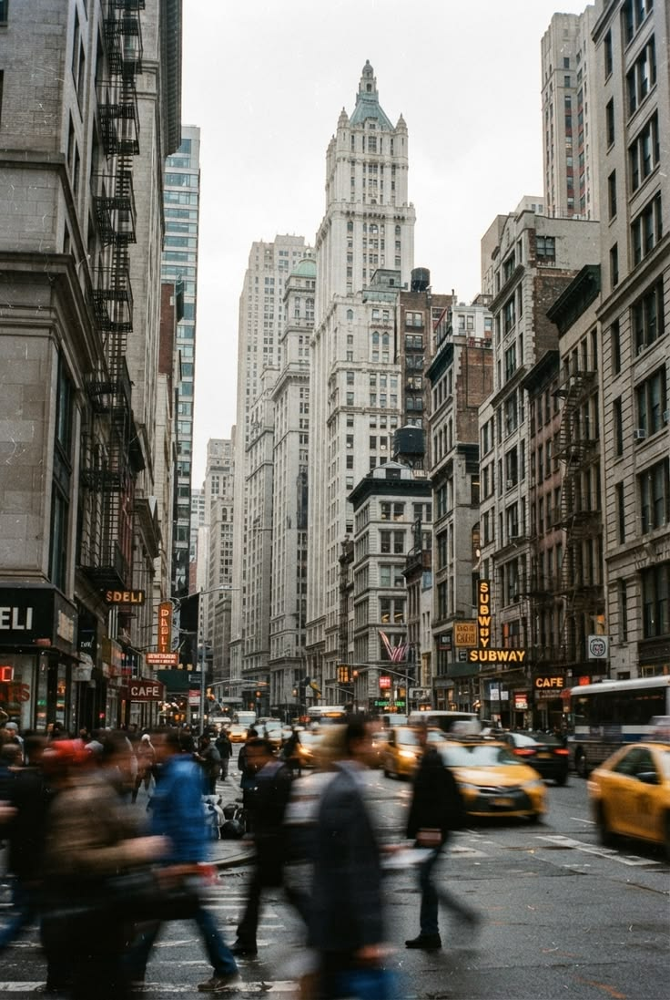

Hi, I’m Wiktoria.
I’m Wiktoria Popek, a Polish creative born in New York City. I currently work as a graphic designer for Victoria Cruises while studying Communication Design at New York City College of Technology. My work focuses on photography and digital design, combining visual storytelling, composition, and thoughtful creative direction.
Photography and travel are a big part of how I experience the world. I love discovering new places, observing people and details, and turning those moments into visual stories. For me, creativity is closely connected to curiosity — the more I see and experience, the more ideas I want to create.
In the future, I hope to grow into an Art Director role, where I can develop concepts, shape visual identities, and bring different creative disciplines together.